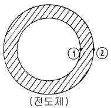
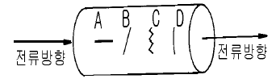
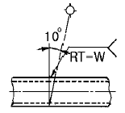
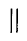
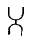
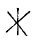
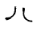

자기비파괴검사산업기사(구) (2003-05-25 기출문제)
1과목: 자기탐상시험원리
1. 자분탐상검사시의 자화방법중 표면 결함에 대하여 가장 감도가 좋은 것은?
- 교류 - 건식법
- 교류 - 습식법
- 직류 - 습식법
- 직류 - 건식법
(정답률: 알수없음)

2. 자석이나 전도체에 형성하는 자계(magnetic field)를 바르게 설명한 것은?
- 자석의 내부에만 형성
- 전기가 흐르는 전도체의 외부 주위에만 형성
- 자석의 내부 및 외부 주위에 형성
- 전기가 흐르는 전도체의 내부에만 유도자장의 형성
(정답률: 알수없음)
3. 공기 중에서의 자계의 세기와 자속밀도의 관계는?
- 거의 같다.
- 자계의 세기의 4πx10-7배 크기의 자속밀도를 나타낸다.
- 공기중에서는 자계의 세기가 커도 자속밀도는 0이다.
- 자속 밀도는 자계의 세기의 제곱에 비례한다.
(정답률: 알수없음)
4. 자력선(Magnetic force line)의 특성에 대한 설명으로 틀린 것은?
- 폐회로(closed loop)를 형성한다.
- 극에 가까울수록 밀도가 증가한다.
- 자성체 외부에서는 S극에서 N극으로 들어간다.
- 서로 교차하지 않는다.
(정답률: 알수없음)
5. 자분탐상검사의 결함 검출에 대한 설명이다. 틀린 것은?
- 교류사용시 강자성체의 표면결함 검출에 국한된다.
- 표면직하 결함의 탐상에는 직류 건식자분을 사용하면 검출능이 향상된다.
- 오스테나이트계 재질의 표면결함은 반드시 교류 형광자분을 사용해야 한다.
- 상자성체의 결함은 검출이 곤란하다.
(정답률: 알수없음)
6. 자분탐상검사의 신뢰도를 향상시킬 수 있는 방법이 아닌것은?
- 검사자의 기량을 향상시킨다.
- 적합한 규격을 적용한다.
- 적합한 자화방법을 선정한다.
- 가급적 높은 전류로 검사한다.
(정답률: 알수없음)
7. 자분탐상검사에서 가장 적절한 시험방법과 정확한 결과를 얻기 위해서 우선적으로 검토되어야 할 요인이 아닌 것은?
- 자분의 종류 및 적용법
- 시험체의 재질, 형상
- 전류의 종류
- 탈자여부
(정답률: 알수없음)
8. 고리 모양의 자석 일부가 깨져서 균열이 생겼을 때 이 균열의 주위에 생성되는 자력선을 무엇이라 하는가?
- 자력선
- 누설자속
- 자장강도
- 선형자장
(정답률: 알수없음)
9. 그림과 같은 자성 전도체(magnetic hollow conductor)에 교류전류가 흐를 경우 자력선의 분포를 바르게 설명한 것은?

- 내부와 외부표면(①과 ②)의 자장의 강도가 동일
- 내부표면(①)이 외부표면(②) 보다 자장의 강도가 높다.
- 외부표면(②)이 내부표면(①) 보다 자장의 강도가 높다.
- 내부표면(①)에 자장이 발생치 않음
(정답률: 알수없음)
10. 자분탐상검사시 표면 직하(subsurface defect) 결함 검출에 가장 적합한 자화 전류의 종류는?
- 교류
- 단상 전파 정류
- 삼상 반파 정류
- 삼상 전파 정류
(정답률: 알수없음)
11. 자분탐상검사시 전기 아크에 의한 안전재해라고 볼 수 없는 것은?
- 아크 빛은 눈에 영향을 준다.
- 아크는 인화성 물질에 화재의 원인이 된다.
- 아크 튀김은 피부에 영향을 끼친다.
- 아크에 의한 전자파는 생식 세포에 영향을 준다.
(정답률: 알수없음)
12. 가한 자장으로부터 반자장을 뺀, 시험하는 부분에 실제로 적용되는 자장을 무엇이라 하는가?
- 반자장
- 유효자장
- 충격자장
- 쇄교자장
(정답률: 알수없음)
13. 자화의 방향이 분명하지 않은 시험체를 탈자할 때의 방법은?
- 시험체를 여러 방향으로 회전시키며 반전 자계로부터 멀리하면서 자계의 방향을 바꾸어가며 탈자한다.
- 시험체를 검사대에 올려놓고 일정한 자계의 세기를 유지하며 반전 감쇠자계를 걸어주어 반복 탈자한다.
- 시험체를 여러 방향으로 회전시키며 반자계의 발생이 많은 방향으로 반전 감쇠자계를 걸어주어 탈자한다.
- 시험체를 검사대에 올려놓고 극성을 바꾸면서 전압을 단계적으로 올리면서 반복 탈자한다.
(정답률: 알수없음)
14. 선형자계를 발생시키는 선형자화(longitudinal magnetization) 방법은?
- 자속관통법
- 축통전법
- 전류관통법
- 극간법
(정답률: 알수없음)
15. 강봉에 그림과 같이 화살표 방향으로 전류를 통전시켜 자분탐상검사를 할 경우 어느 불연속의 지시가 가장 잘 나타나겠는가?

- A
- B
- C
- D
(정답률: 알수없음)
16. 자분탐상검사 방법 중 전류관통법을 적용할 때 시험체에 작용하는 자장에 대해서 서술한 것이다. 틀린 것은?
- 자장강도는 도체 중심에서의 거리에 정비례한다.
- 자장의 형상은 도체의 주변에서 거의 원형으로 된다.
- 자장의 강도는 전류의 크기에 정비례한다.
- 자화전류치는 주어진 자장의 적정치로부터 일반적으로 계산할 수 있다.
(정답률: 알수없음)
17. 실린더형 자성체에 직류를 흘렸을 때 발생되는 자계에 대한 다음 설명 중 옳지 않은 것은?
- 실린더형 자성체 내면에서의 자계의 세기는 0 이다.
- 실린더형 자성체외부의 자계의 분포는 거리의 증가에 따라 자계의 세기가 약해진다.
- 외부표면에서의 자계의 세기는 바깥지름이 같은 봉형 자성체에 같은 크기의 직류가 적용됐을 때와 같다.
- 외부표면에서의 자계의 세기는 바깥지름이 같은 봉형 비자성체에 같은 크기의 직류가 적용됐을 때 보다 작다.
(정답률: 알수없음)
18. 초음파탐상검사시 알루미늄에서 종파속도가 6350m/s이고, 주파수가 2MHz이면 이 초음파의 파장은?
- 3.18mm
- 1.59mm
- 6.35mm
- 12.7mm
(정답률: 알수없음)
19. 다음 자분탐상검사 방법 중에서 원형자계가 형성될 수 있는 것은?
- 전류관통법
- 자속관통법
- 극간법
- 코일법
(정답률: 알수없음)
20. 다음 중 자속밀도(magnetic flux density)의 SI 단위는?
- Weber(Wb)
- Tesla(T)
- Maxwell(Mx)
- Ampere/meter(A/m)
(정답률: 알수없음)
2과목: 자기탐상검사
21. 프로드(prod)법으로 자분탐상검사를 하다보면 접촉부위에 자분이 축적되는 현상이 나타난다. 다음 중 이를 방지하는 방법으로 가장 적당한 것은?
- 자화 전류를 높인다.
- 프로드의 간격을 좁힌다.
- 습식 자분을 사용한다.
- 자력선의 강도를 낮춘다.
(정답률: 알수없음)
22. 자화 고무법으로 검사할 때 다음 중 검사자재로 사용되지 않는 것은?
- 자화고무
- 주사기
- 테이프
- 공기압축기
(정답률: 알수없음)
23. 다음 중 유도전류법에 의한 자분탐상검사의 장점이 아닌것은?
- 원반(Disk) 또는 구(Ball) 형태의 시험체 검사에 적합하다.
- 크기가 작은 구형 시험체를 연속법으로 검사하면 효율이 매우 높다.
- 1회의 자화로도 시험체를 100% 검사할 수 있다.
- 시험체에 전류를 직접적으로 접촉시키지 않고도 검사가 가능하다.
(정답률: 알수없음)
24. 다음 중 도체패드(pad)를 사용하지 않아도 되는 자분탐상 시험법은?
- 축통전법
- 직각통전법
- 요크법
- 프로드법
(정답률: 알수없음)
25. 누설자속 탐상기의 장점이 아닌 것은?
- 고속탐상 가능
- 결함의 정량측정 가능
- 자동화 적합
- 복잡한 형상 적용 가능
(정답률: 알수없음)
26. 자분탐상검사시 물질의 투자율이 달라서 나타나는 자분모양을 무엇이라 하는가?
- 결함자분모양
- 자기펜자국
- 의사모양
- 연속한 자분모양
(정답률: 알수없음)
27. 강자성체인 파이프를 중심도체법으로 자화했을 때 자속밀도가 가장 높은 곳은?
- 모두 균일하다.
- 내면이 가장 높다.
- 내면과 외면의 중간이 가장 높다.
- 외면이 가장 높다.
(정답률: 알수없음)
28. 다음 중 프로드법에서 탐상유효 범위에 영향을 미치는 탐상조건이 아닌 것은?
- 결함의 갯수
- 통전시간 및 자분적용시간
- 자분 및 검사액
- 프로드 간격
(정답률: 알수없음)
29. 자분탐상검사를 하기 전에 기름이나 그리스의 얇은 막을 제거하기 위해 사용되는 방법과 거리가 먼 것은?
- 용제로 세척한다.
- 증기 세척법으로 세척한다.
- 분필이나 활석가루를 뿌린 다음 건조된 천으로 닦아낸다.
- 쇠솔로 표면을 솔질한다.
(정답률: 알수없음)
30. 두께가 두꺼운 강판의 비파괴검사시 발견될 수 없는 결함은?
- 파이프(Pipe)
- 기공(Blow hole)
- 루트균열(Root crack)
- 라미네이션(Lamination)
(정답률: 알수없음)
31. 철강봉을 축통전법으로 자분탐상검사를 하는 경우 직경 100mm의 표면에 100[Oe]를 얻기 위한 자화전류는?
- 500Amp
- 1,000Amp
- 2,000Amp
- 2,500Amp
(정답률: 알수없음)
32. 자분탐상검사로 외경 50㎜, 길이 600㎜, 두께 6㎜인 강관에 있는 균열 결함을 찾고자 중심도체법을 적용할 때 필요한 전류 값은?
- 600 ∼ 800Amp
- 800 ∼ 1000Amp
- 1400 ∼ 1800Amp
- 2000 ∼ 2400Amp
(정답률: 알수없음)
33. 수동아크 용접을 한 용접부의 중앙에 미세한 그물모양의 자분지시가 건식법으로는 잘 나타나지 않았으나 습식법에서는 선명하게 나타났다. 무슨 결함으로 간주되는가?
- 융합불량(LF)
- 용입부족(IP)
- 크레이터 균열
- 수축균열
(정답률: 알수없음)
34. 자분탐상시험에서 원형자화시 전류의 크기를 결정하는 인자는?
- 시험체의 직경 및 투자율
- 전도체의 크기 및 밀도
- 시험체의 두께 및 보자성
- 전도체의 투자성 및 항자력
(정답률: 알수없음)
35. 대형 탱크의 강용접부를 자분탐상검사할 때 가장 효율적으로 적용할 수 있는 검사 방법은?
- 축통전법
- 극간법
- 전류관통법
- 유도전류법
(정답률: 알수없음)
36. 직경이 2인치, 길이가 54인치인 환봉을 코일법으로 검사 코자할 때 시험은 몇 회로 나누어 적용해야 하는가?
- 최소 1회 이상
- 최소 2회 이상
- 최소 3회 이상
- 최소 27회
(정답률: 알수없음)
37. 자분탐상시험시 다음 중 가장 주의를 기울여야 할 결함은 ?
- 표면결함
- 표면밑 결함
- 비관련 결함
- 거짓결함
(정답률: 알수없음)
38. 시험체의 국부에 각각 2개의 전극을 접촉하고 전류를 보내는 자화법은?
- 코일법
- 요크법
- 프로드법
- 자속 관통법
(정답률: 알수없음)
39. 자분탐상시험에 사용하는 자분의 성질과 특성에 대한 설명으로 맞는 것은?
- 자분은 투자율이 높아야 한다.
- 자분은 보자력이 높아야 한다.
- 자분은 완전 구형이어야 한다.
- 자분의 비중은 제작시 고려치 않아도 된다.
(정답률: 알수없음)
40. 다음 중 건식자분 사용시의 특징이 아닌 것은?
- 휴대용검사 장치를 사용할 때 큰 부품에 적용하기 쉽다.
- 교류전류(AC)나 반파정류(Half wave)전류를 사용할 경우 자분의 이동성이 좋다.
- 불규칙한 표면의 검사시 감도가 좋다.
- 평판의 수직면 검사시 자분에 의한 의사모양이 적다.
(정답률: 알수없음)
3과목: 자기탐상관련규격및컴퓨터활용
41. KS D 0213에 의거 자외선조사 장치의 필터가 통과시켜야 할 근 자외선의 파장범위는?
- 160∼240nm
- 240∼320nm
- 320∼400nm
- 400∼480nm
(정답률: 알수없음)
42. ASME Sec.V에서 형광자분탐상시험시 지켜야 할 사항중 옳지 못한 것은?
- 자외선조사등의 강도는 매 8시간마다 측정한다.
- 자외선조사등의 강도는 작업장이 바뀔 때마다 측정한다.
- 자분탐상 시험자는 시험전 5분 먼저 암실에 들어가 어둠에 눈을 익숙하게 한다.
- 자외선조사등의 강도는 켜자마자 바로 측정해야 한다.
(정답률: 알수없음)
43. KS D 0213에 의한 자분탐상시험에서 잔류법의 경우 통전시간은 원칙적으로 어떻게 정하고 있는가?
- 1/4∼1초
- 2∼10초
- 3분이내
- 5분이상
(정답률: 알수없음)
44. ASME Sec.V에서 극간법을 사용하여 용접부를 검사할 때 교류를 사용시 사용극간 최대간격에서 들어올릴 수 있는 힘(lifting power) 즉, 무게는 최소 얼마 이상이어야 한다고 규정하고 있는가?
- 10 Ib(파운드)
- 20 Ib(파운드)
- 30 Ib(파운드)
- 40 Ib(파운드)
(정답률: 알수없음)
45. ASME Sec.V에서 프로드(prod)법은 시험편 두께가 3/4인치 이상일 경우 전류는 인치당 몇 암페어로 규정하는가?
- 70∼90Amp/인치
- 90∼100Amp/인치
- 100∼125Amp/인치
- 150∼170Amp/인치
(정답률: 알수없음)
46. ASME SE-709에 의거 프로드법에서 전극간의 최대 간격은?
- 150㎜
- 175㎜
- 203㎜
- 225㎜
(정답률: 알수없음)
47. 디스켓을 포맷할 때 포맷형식을 [시스템파일만 복사]로 선택하였을 때 복사되는 파일명은?
- COMMAND.COM
- MSDOS.SYS, IO.SYS
- MSDOS.SYS, IO.SYS, COMMAND.COM
- COMMAND.COM, AUTOEXEC.BAT, CONFIG.SYS
(정답률: 알수없음)
48. 인터넷 접속방식에서 모뎀을 이용해 접속하지만 자신의 PC가 인터넷에 직접 접속되는 것과 같은 효과의 접속방식은?
- LAN 접속
- 터미널 접속
- IPX
- Slip/PPP 접속
(정답률: 알수없음)
49. KS D 0213을 기준으로 다음 ( )안에 알맞는 조합은? [자분탐상시험 장치는 원칙적으로 (1), (2), (3) 및 (4) 의 4조건으로 할 수 있는 것으로 한다. 다만 필요치 않은 경우 (4)는 생략할 수도 있다.] (순서대로 (1), (2), (3), (4))
- 자화, 자분적용, 탈자, 관찰
- 전처리, 탈자, 자화, 자분점검
- 자화, 자분적용, 관찰, 탈자
- 탈자, 전처리, 자화, 자분적용
(정답률: 알수없음)
50. ASME code에 의한 형광자분탐상시험 내용중 틀린 것은?
- 자외선 조사장치의 세기는 최소 1000μW/㎝2 이어야 한다.
- 자외선 조사장치의 세기는 최소 매 8시간마다 측정되어야 한다.
- 작업 위치가 바뀌었을 때에도 자외선 조사장치의 세기를 측정하여야 한다.
- 자외선 조사장치의 예열시간은 1분이상이어야 한다.
(정답률: 알수없음)
51. KS D 0213에 의한 재질경계지시로 볼 수 없는 것은?
- 시험체가 서로 접촉했을 때 형성되는 부정모양의 자분 모양
- 용접부의 용접금속과 모재의 경계부위에 형성되는 자분모양
- 냉간가공의 표면가공도가 다른 부분에 생기는 자분모양
- 단조품 또는 압연품의 메탈플로부에 생기는 자분모양
(정답률: 알수없음)
52. 인터넷에 대한 설명으로 거리가 먼 것은?
- 전세계의 컴퓨터를 하나의 거미줄과 같이 만들어 놓은 컴퓨터 네트워크 통신망이다.
- 인터넷에 연결되어 있는 컴퓨터의 수는 InterNIC에서 매일 정확히 집계된다.
- TCP/IP라는 통신 규약을 이용해 전세계의 컴퓨터를 연결하고 있다.
- 인터넷을 "정보의 바다"라고도 표현한다.
(정답률: 알수없음)
53. 컴퓨터 네트워크에서 상대방의 컴퓨터가 켜져 있는지 확인하기 위해서 사용할 수 있는 명령어는?
- PING
- ARP
- RARP
- IP
(정답률: 알수없음)
54. 다음 중 네트워크 관련기관을 나타내는 도메인은?
- go.kr
- nm.kr
- ac.kr
- re.kr
(정답률: 알수없음)
55. KS D 0213에서 자분모양의 분류에 해당되지 않는 것은?
- 균열에 의한 자분모양
- 수축상에 의한 자분모양
- 분산한 자분모양
- 원형상에 의한 자분모양
(정답률: 알수없음)
56. KS D 0213의 자화 전류에 관한 내용 중 맞는 것은?
- 교류 사용시는 원칙적으로 연속법에 한한다.
- 직류를 사용할 때에는 연속법만 사용할 수 있다.
- 맥류는 그것에 포함된 교류성분이 클수록 내부 결함의 검출 성능이 증가한다.
- 충격전류를 사용할 때에는 연속법에 한한다.
(정답률: 알수없음)
57. KS D 0213에 따라 시험체에 자분을 적용할 때 주의하여야 할 사항에 설명한 것 중 옳지 못한 것은?
- 연속법에 있어서는 자화 조작중에 자분의 적용을 완료한다.
- 잔류법에 있어서는 자화 조작전에 자분의 적용을 완료한다.
- 건식법에 있어서는 시험면이 충분히 건조되어 있는가 확인 후 자분을 적용한다.
- 습식법에 있어서는 시험면 상의 검사액의 유속(流速)이 과도하지 않도록 주의한다.
(정답률: 알수없음)
58. ASME Code에 따라 모재두께가 24㎜인 강용접부를 6인치의 프로드 간격으로 자분탐상하였을 경우 필요한 전류 범위는?
- 600 ∼ 750 A
- 580 ∼ 680 A
- 540 ∼ 660 A
- 450 ∼ 600 A
(정답률: 알수없음)
59. KS D 0213의 용어 설명중 맥류에 관한 것은?
- 주기적으로 크기가 변화(다만 크기는 불변)하는 자화전류(단, 맥동률이 삼상전파전류 이하의 것)
- 주기적으로 크기가 변화(다만 극성은 불변)하는 자화전류(단, 맥동률이 삼상전파전류보다 클것)
- 주기적으로 크기가 변화(다만 크기는 불변)하는 자화전류(단, 맥동률이 삼상전파전류보다 클것)
- 주기적으로 크기가 변화(다만 극성은 불변)하는 자화전류(단, 맥동률이 삼상전파전류 이하의 것)
(정답률: 알수없음)
60. 자분탐상(형광)시 자외선 조사에 관한 사항중 ASME Sec.V Art.7 규정을 틀리게 설명한 것은?
- 어두운 곳에 적응하기 위해 암실에서 최소 5분이상을 기다려야 한다.
- 자외선발생장치는 최소 5분이상 예열시간을 주어야 한다.
- 자외선 강도는 매 12시간마다 측정해야 한다.
- 자외선 강도는 작업장소 변경시 측정해야 한다.
(정답률: 알수없음)
4과목: 금속재료 및 용접일반
61. 중금속(비중:약 7.1)으로 용융점이 약 420℃ 인 것은?
- 알루미늄
- 마그네슘
- 아연
- 베리륨
(정답률: 알수없음)
62. 산소 - 아세틸렌 가스절단에 대한 설명 중 틀린 것은?
- 예열불꽃은 백심 끝이 모재 표면에서 약 1.5∼2.0mm 정도가 좋다.
- 절단면에 예열온도는 약 1200∼1300℃ 정도로 한다.
- 팁 크기와 형상, 산소압력, 절단속도 등은 절단에 영향을 미친다.
- 표준 드래그 길이는 두께 12.7mm에 대하여 2.4mm이다
(정답률: 알수없음)
63. 고탄소강의 용접에 대한 다음 설명 중 틀린 것은?
- 용접성이 나쁘고 용접 터짐이 심하기 때문에 예열이 필요하다.
- 후열을 필요로 하는 경우에는 용접 후 가열하여 연성을 회복시킨다.
- 아크 용접에서는 전류를 높게하여 용입을 얕게한다.
- 열영향부가 단단해져 균열이 나기 쉬운 등 용접성이 좋지 않다.
(정답률: 알수없음)
64. 한개의 결정핵이 발달하여 나무가지 모양을 이룬 것은?
- 편상세포
- 수지상정
- 과냉
- 고스트라인
(정답률: 알수없음)
65. 열간가공과 냉간가공의 한계는?
- 재결정온도
- 연성온도
- 소성가공온도
- 용융점
(정답률: 알수없음)
66. 서밋(cermet)합금의 용도로 관련이 가장 적은 것은?
- 밸브넛트
- 절삭용 공구
- 착암기의 드릴끝
- 내열재료
(정답률: 알수없음)
67. 용접후 잔류 응력을 제거하는 방법이 아닌 것은?
- 노내 풀림법
- 저온응력 완화법
- 국부 풀림법
- 고온응력 완화법
(정답률: 알수없음)
68. 순철의 동소변태로 약1400℃에서 γ-Fe 偵 δ -Fe 의 변태는?
- A1
- A2
- A3
- A4
(정답률: 알수없음)
69. 전기용접법의 일종으로 아크열이 아닌 와이어와 중간생성물 사이에 흐르는 전류의 저항열(Joule heat)을 이용하는 용접법은?
- 스터드 용접법
- 테르밋 용접법
- 일렉트로 슬래그 용접법
- 원자수소 용접법
(정답률: 알수없음)
70. 가스 용접봉 선택조건으로 틀린 것은?
- 모재와 동일 재료를 선택한다.
- 모재보다 용융온도가 낮아야 한다.
- 모재에 충분한 강도를 줄 수 있어야 한다.
- 기계적 성질이 좋아야 한다.
(정답률: 알수없음)
71. 다음 그림에서 관의 용접부 비파괴검사 기호의 설명 중 맞는 것은?

- 방사선투과 시험법으로 이중벽 촬영방법
- 자분탐상 시험법을 내부탐상에 의한 시험방법
- 초음파 탐상시험법을 내부탐상 의한 시험방법
- 와전류 시험법을 내부선원에 의한 현장탐상 방법
(정답률: 알수없음)
72. 기능재료에서 처음 주어진 특정한 모양의 것을 인장하여 소성변형한 것을 가열에 의하여 원형으로 돌아가는 현상은?
- 초탄성
- 소성변형 현상
- 형상기억 효과
- 피에조(piezo)현상
(정답률: 알수없음)
73. 아크의 크기가 지나치게 길 때의 영향에 대한 설명으로 틀린 것은?
- 아크가 불안정하다.
- 용착이 지나치게 두껍게 된다.
- 용접봉의 소모가 많다.
- 용접부의 강도가 감소된다.
(정답률: 알수없음)
74. 전위(dislocation)의 종류에 속하지 않는 것은?
- 나사전위
- 칼날전위
- 절단전위
- 혼합전위
(정답률: 알수없음)
75. 용접 접합면에 홈(Groove)을 만드는 가장 중요한 이유는?
- 용착금속이 잘녹아 들어 완전 용입을 얻기 위해
- 용접시 발생하는 용접변형을 줄이기 위해
- 용접구조물의 정확한 치수조정을 위해
- 용접시간을 단축하기 위해
(정답률: 알수없음)
76. 크롬(Cr)계 스테인리스강의 취성의 종류로 구분할 수 없는 것은?
- 475℃ 취성
- 저온취성
- 고온취성
- 불꽃취성
(정답률: 알수없음)
77. 0.2% 탄소강의 상온에서 초석 페라이트의 량은? (공석점의 탄소 함량은 0.8%임)
- 25%
- 35%
- 65%
- 75%
(정답률: 알수없음)
78. 양은 이라고도 하며 Ni을 함유하는 황동은?
- 포금
- 보론
- 양백
- 칼렛
(정답률: 알수없음)
79. 용접기호중 양쪽 플랜지형 모양의 기본 기호는?




(정답률: 알수없음)
80. 다음 중 점용접의 3대 요소가 아닌 것은?
- 도전율
- 용접 전류
- 가압력
- 통전 시간
(정답률: 알수없음)